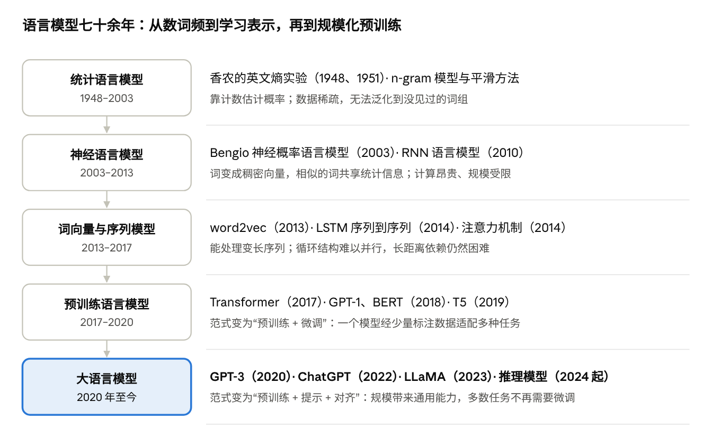
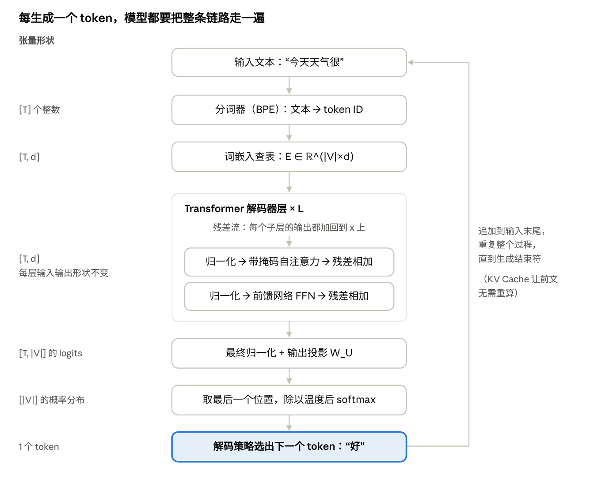
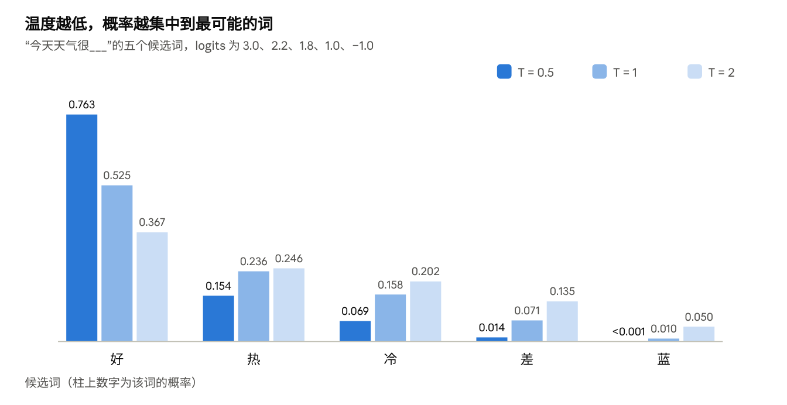

2.1 底层逻辑
LLM 的底层逻辑可以概括为一句话：放弃用少数公理推导出一切，转而从海量经验中学习概率。理解这一点，需要先回到一百年前数学家对”确定性”的追求与失败。
2.1.1 神经网络的数学基础
二十世纪初，德国数学家希尔伯特（David Hilbert）提出了一个宏大的计划：找到一套简单的公理和逻辑规则，使整个数学都能从中严格推出，并且这套系统既完备（每个命题都能判定真假）又自洽（不会推出矛盾）。罗素（Bertrand Russell）与怀特海在 1910–1913 年出版的《数学原理》中，尝试仅用”与、或、非”等基本逻辑构造出算术。
这个梦想很快被两项结果打破：
1931 年，哥德尔不完备定理：任何足以表达算术的自洽形式系统，都存在系统内部既不能证明、也不能反驳的命题。“完备”与”自洽”不可兼得。
1936 年，图灵可计算性理论：图灵用一台抽象机器（图灵机）定义了”算法”，并证明没有一个通用算法能对任意问题给出答案（例如停机问题不可判定）。
这两个否定性结果反而带来了一件意外的礼物：图灵机给出了”可计算”的精确定义。在这个基础上，神经生理学家麦卡洛克（Warren McCulloch）和数学家皮茨（Walter Pitts）于 1943 年提出了第一个神经元数学模型——M-P 模型：
\[y = f\left( \sum_{i = 1}^{n}w_{i}x_{i} - \theta \right),\quad\quad f(z) = \left\{ \begin{matrix} 1, & z \geq 0 \\ 0, & z < 0 \end{matrix} \right.\ \]
其中 x_i 是输入信号，w_i 是突触权重，θ 是阈值。他们证明，这样的神经元通过组合可以实现任意逻辑函数，因而神经网络在原理上与图灵机等价。这是神经网络的第一块基石。
此后的发展可以用一条主线串起来：
| 年份 | 里程碑 | 意义 |
|---|---|---|
| 1943 | M-P 神经元模型 | 神经元可以做逻辑运算，但权重靠人工设定 |
| 1958 | Rosenblatt 感知机 | 权重可以从数据中”学”出来 |
| 1969 | Minsky 与 Papert《感知机》 | 指出单层感知机解不了异或（XOR），神经网络进入寒冬 |
| 1986 | Rumelhart、Hinton、Williams 推广反向传播 | 多层网络可以高效训练，XOR 问题迎刃而解 |
| 1989 | Cybenko 万能逼近定理 | 单隐层网络可以任意精度逼近连续函数 |
| 2012 | AlexNet 赢得 ImageNet 竞赛 | GPU + 大数据 + 深度网络的组合首次大幅胜出 |
| 2017 | Transformer（Attention Is All You Need） | 可大规模并行训练的序列模型，成为 LLM 的标准骨架 |
值得注意的是一个转折：M-P 模型诞生于”逻辑”的传统，但深度学习的成功却来自”统计”的传统——不再手工设计规则，而是让几十亿个参数从数据中自己寻找规律。下面先看神经网络是如何从数据中”学”的。
一、感知机：让机器从错误中学��
M-P 模型的权重是人工设定的。1958 年，罗森布拉特（Frank Rosenblatt）提出的感知机第一次让权重可以从数据中自动学出来。感知机对输入 x 做线性加权后取符号，输出 ŷ = sign(w·x + b)。每当它在一个样本上判断错误，就按下面的规则修正权重：
\[w \leftarrow w + \eta\,(y - \widehat{y})\, x,\quad\quad b \leftarrow b + \eta\,(y - \widehat{y})\]
其中 y 是正确答案，η 是学习率。这条规则的直觉很简单：如果正样本被判成了负的，就把权重向这个样本的方向拉近一点；反之则推远一点。罗森布拉特证明了感知机收敛定理：只要数据是线性可分的，这个过程一定会在有限步内停下来，找到一个能把两类样本分开的超平面。
“用误差修正参数”这个思想一直延续到今天。训练一个千亿参数的 LLM，本质上仍是在每个 token 上衡量”预测错了多少”，再把参数朝减小错误的方向挪一点。
二、异或问题与多层网络
1969 年，明斯基（Marvin Minsky）与帕珀特（Seymour Papert）指出，单层感知机连最简单的异或（XOR）都学不会。异或的真值表是：
| x₁ | x₂ | XOR | OR（h₁） | NAND（h₂） | AND(h₁, h₂) |
|---|---|---|---|---|---|
| 0 | 0 | 0 | 0 | 1 | 0 |
| 0 | 1 | 1 | 1 | 1 | 1 |
| 1 | 0 | 1 | 1 | 1 | 1 |
| 1 | 1 | 0 | 1 | 0 | 0 |
把四个点画在平面上，(0,1) 和 (1,0) 是一类，(0,0) 和 (1,1) 是另一类，它们分居对角，没有任何一条直线能把它们分开。但表中后三列给出了解法：先用两个隐藏神经元分别算出 OR 和 NAND（每个都是线性可分的），再用一个输出神经元对它们取 AND，结果恰好等于 XOR。
这个例子说明了一个深刻的道理：隐藏层的作用是把输入变换到一个新的表示空间，在新空间里，原来线性不可分的问题变得线性可分。LLM 的几十上百层网络，做的是同一件事的放大版：一层层地把文字变成越来越抽象的表示。问题在于，当时没有人知道如何高效地训练多层网络，神经网络研究因此进入了长达十余年的寒冬。
三、反向传播：链式法则的工程化
1986 年，鲁梅尔哈特（David Rumelhart）、辛顿和威廉姆斯（Ronald Williams）在《自然》杂志上推广了反向传播算法，解决了多层网络的训练问题。它的数学基础就是微积分中的链式法则：如果损失 L 经过一串中间变量依赖于参数 w，那么 L 对 w 的导数等于沿途各段导数的乘积。
看一个可以手算的例子。一个神经元用 sigmoid 激活函数 σ(z) = 1 / (1 + e^(−z))，损失取平方误差：
\[z = wx + b,\quad\quad y = \sigma(z),\quad\quad L = \frac{1}{2}(y - t)^{2}\]
取输入 x = 1、初始权重 w = 0.5、偏置 b = 0、目标 t = 1、学习率 η = 1。为便于演示，本例固定偏置 b = 0，仅更新权重 w。
前向计算：z = 0.5，y = σ(0.5) ≈ 0.6225，L = ½ × (0.6225 − 1)² ≈ 0.0713。
反向计算，从损失往回逐段求导：∂L/∂y = y − t ≈ −0.3775；∂y/∂z = y(1 − y) ≈ 0.2350；∂z/∂w = x = 1。
链式相乘：∂L/∂w = (−0.3775) × 0.2350 × 1 ≈ −0.0887。
更新参数：w ← 0.5 − 1 × (−0.0887) ≈ 0.5887。重新计算得 y ≈ 0.6431，损失降到约 0.0637。
在真实网络中，这条链会穿过几十层、涉及几十亿个参数，但原理完全相同。反向传播的巧妙之处在于复用：第 l 层的梯度可以由第 l + 1 层的梯度直接算出，因此一次反向遍历就能得到全部参数的梯度，计算量只是前向的约 2 倍。这正是 2.2.2 节 C ≈ 6ND 公式中”前向 2、反向 4”的由来。今天的 PyTorch 等框架把这一过程封装成了自动微分，开发者只需写出前向计算。
四、梯度下降与 Adam 优化器
有了梯度，最简单的更新方式是随机梯度下降（SGD）：每次随机取一小批样本，算出平均梯度 g，再让 θ ← θ − ηg。但大模型的损失曲面极不规则，不同参数的梯度大小可能相差几个数量级，统一的学习率很难兼顾。因此 LLM 几乎都使用 Adam（更确切地说是带解耦权重衰减的 AdamW）。它为每个参数分别维护梯度的一阶矩 m（动量）和二阶矩 v（梯度平方的滑动平均）：
\[m_{t} = \beta_{1}m_{t - 1} + (1 - \beta_{1})g_{t}\]
\[v_{t} = \beta_{2}v_{t - 1} + (1 - \beta_{2})g_{t}^{2}\]
\[\theta_{t} = \theta_{t - 1} - \eta\,\frac{{\widehat{m}}_{t}}{\sqrt{{\widehat{v}}_{t}} + \epsilon}\]
其中 m̂ 和 v̂ 是经过偏差修正的估计值。除以 √v̂ 相当于给每个参数一个自适应的步长：梯度一直很大的参数走得谨慎一些，梯度很小的参数走得大胆一些。GPT-3 等模型常用 β₁ = 0.9、β₂ = 0.95，并配合学习率预热（先从很小的学习率线性升高）和余弦衰减（之后按余弦曲线逐渐降低）。
工程提示：Adam 要为每个参数额外保存 m 和 v 两个状态，这意味着优化器状态本身就要占用数倍于模型参数的显存。训练一个模型所需的显存远大于推理所需，原因之一就在这里，具体的估算方法见第四章。
五、万能逼近与”深度”的意义
1989 年，数学家 George Cybenko证明了万能逼近定理：只要隐藏神经元足够多，一个单隐层的神经网络就能以任意精度逼近任何连续函数。这个定理告诉我们神经网络”表达得了”，却没有告诉我们”学得会”，也没有说需要多少神经元。实践和理论都表明，让网络变”深”比变”宽”更有效：深层网络可以复用低层学到的特征，从字符到词、从词到句法、从句法到语义，逐层堆叠出复杂的概念。这就是”深度学习”中”深度”的含义。
2.1.2 从统计语言模型到大语言模型
LLM 并不是凭空出现的。“给定前文，预测下一个词”这个问题已经被研究了七十多年，每一代方法都在解决上一代的主要缺陷。理解这条演进路线，是理解 Transformer 和 GPT 为什么长成今天这样的最好方式。

图 2-1 · 语言模型的五个发展阶段
一、统计语言模型：数出来的概率
1948 年，香农（Claude Shannon）在创立信息论的论文中就用英文字母和单词的统计规律生成过文本；1951 年，他又通过让人逐个猜测下一个字母的实验，估计了英文的信息熵。这可以看作最早的”语言模型”。
要精确计算 P(w_t | w_1, …, w_{t−1}) 是不现实的，因为完全相同的长前文几乎不会在语料中重复出现。n-gram 模型引入了马尔可夫假设：一个词只依赖于它前面的 n − 1 个词。概率可以用语料中的计数来估计：
\[P(w_{t} \mid w_{t - n + 1},\ldots,w_{t - 1}) \approx \frac{count(w_{t - n + 1},\ldots,w_{t - 1},w_{t})}{count(w_{t - n + 1},\ldots,w_{t - 1})}\]
以 n = 2（bigram）为例：若语料中”天气”出现了 1000 次，其中后面紧跟”很”的有 200 次，则 P(很 | 天气) ≈ 0.2。这种方法简单高效，曾长期是语音识别和输入法的核心组件，但有三个根本缺陷：
数据稀疏。词表大小为 V 时，可能的 n-gram 有 V^n 种。V = 5 万、n = 3 时就有 1.25 × 10^14 种组合，绝大多数在语料中从未出现，概率被估为 0。人们为此发明了加一平滑、Kneser–Ney 平滑等技术，但只是缓解，没有根治。
上下文太短。n 一般只能取到 3 至 5，模型看不到更远处的信息。“我在北京长大……（一大段其他内容）……所以我说一口流利的___”，要填出”普通话”需要远距离依赖。
无法泛化。对 n-gram 来说，“猫”和”狗”是两个毫无关系的符号。即使它见过一万次”猫在沙发上睡觉”，也无法由此推断”狗在沙发上睡觉”是通顺的。
衡量语言模型好坏的标准指标是困惑度（Perplexity，PPL），它是平均交叉熵损失的指数：
\[PPL = exp\left( - \frac{1}{T}\sum_{t = 1}^{T}\log P(w_{t} \mid w_{< t}) \right)\]
困惑度有一个直观的解释：模型在每个位置上的不确定程度，相当于在多少个等可能的词中随机选一个。PPL = 20 意味着模型每一步大约在 20 个候选词之间犹豫；PPL 越低，模型对语言的把握越大。
二、神经语言模型：把词变成向量
2003 年，本吉奥（Yoshua Bengio）等人提出了神经概率语言模型（NPLM）。它的关键一步是给每个词分配一个可学习的稠密向量（词嵌入），把前 n − 1 个词的向量拼接后送入神经网络，再用 softmax 输出下一个词的概率。训练中，出现在相似语境里的词会得到相近的向量。于是”猫”和”狗”在向量空间里靠得很近，模型从”猫在沙发上睡觉”学到的知识，自然地迁移到了”狗”上。数据稀疏问题由此得到了根本性的缓解。
2013 年 Google 的 Mikolov 等人提出的 word2vec，把训练词向量的成本降低到可以在数十亿词上运行，并展示了词向量的线性结构：
\[\overrightarrow{v}(\text{国王}) - \overrightarrow{v}(\text{男人}) + \overrightarrow{v}(\text{女人}) \approx \overrightarrow{v}(\text{女王})\]
但 word2vec 的词向量是静态的：“苹果”在”吃一个苹果”和”苹果发布了新手机”里是同一个向量，无法区分一词多义。
三、循环神经网络与注意力：处理任意长的序列
为了突破固定长度的上下文窗口，循环神经网络（RNN）用一个隐藏状态 h_t 来”记住”读过的内容，每读入一个词就更新一次：
\[h_{t} = tanh(Wh_{t - 1} + Ux_{t} + b)\]
理论上 h_t 包含了从开头到当前的所有信息。但反向传播时，梯度要沿时间步一路连乘 W，序列一长就会指数级地衰减或爆炸，这就是梯度消失与梯度爆炸问题。1997 年提出的长短期记忆网络（LSTM）用门控机制控制信息的写入、遗忘和输出，大大缓解了这一问题。2014 年的序列到序列（seq2seq）模型用一个 LSTM 把源句编码成向量，再用另一个 LSTM 解码出译文，开启了神经机器翻译的时代。
seq2seq 有一个明显的瓶颈：无论源句多长，都要压进一个固定长度的向量。同年，Bahdanau 等人提出了注意力机制：解码器在生成每个词时，都可以回头查看编码器在所有位置上的状态，并自己决定应该重点关注哪里。翻译”apple”时，注意力自然地落在源句的”苹果”上。2017 年的 Transformer 更进一步：既然注意力已经能建模任意位置之间的关系，就干脆去掉循环结构。所有位置可以同时计算，GPU 的并行能力得以充分发挥，这是后来一切”大”的前提。
四、预训练与大模型：范式的两次转移
2018 年是预训练元年。ELMo 用双向 LSTM 生成随上下文变化的词向量，解决了一词多义问题；OpenAI 的 GPT-1 和 Google 的 BERT 则用 Transformer 在大规模无标注文本上预训练，再在具体任务的少量标注数据上微调，刷新了几乎所有 NLP 基准。这是第一次范式转移：从”为每个任务设计一个模型”变为”预训练 + 微调”。
2020 年的 GPT-3 带来了第二次范式转移。当模型大到 1750 亿参数时，只需在提示中写几个示例，它就能完成翻译、问答、算术等任务，连微调都不需要了。2022 年 11 月，OpenAI 在 GPT-3.5 上叠加指令微调和 RLHF，发布了 ChatGPT，两个月内用户数破亿。此后，Meta 的 LLaMA（2023）推动了开源大模型生态，OpenAI o1（2024）和 DeepSeek-R1（2025）等推理模型又把重心从”训练得更大”扩展到”推理时想得更久”。
| 阶段 | 干活的方式 | 人的主要工作 |
|---|---|---|
| 统计学习 | 为每个任务训练一个浅层模型 | 特征工程：手工设计输入特征 |
| 深度学习 | 为每个任务训练一个神经网络 | 架构工程：设计网络结构 |
| 预训练 + 微调 | 一个预训练模型，按任务微调 | 目标工程：设计预训练任务与微调方式 |
| 预训练 + 提示 + 对齐 | 一个通用大模型，直接用自然语言下达任务 | 提示工程与对齐：告诉模型做什么、怎样才算做好 |
2.1.3 LLM 是经验论的产物？
亚里士多德把哲学的工具分为逻辑、辩证法和修辞：逻辑追求用推理达到科学的确定性，后两者处理的则是”很可能为真”的问题，即概率。在人类思想史的大部分时间里，确定性的传统占据上风：宗教中的因果论与决定论、科学中的牛顿力学体系，都相信世界由确定的规律支配，只要知道初始条件就能推出一切。爱因斯坦可以说是”最后一位牛顿”。
苏格兰哲学家休谟（David Hume）的怀疑论动摇了这一传统。他认为，感性知觉是认识的唯一对象，人无法超出知觉去追问知觉的来源；我们所谓的”因果”，不过是反复观察到 A 之后出现 B 所形成的习惯性联想。太阳每天升起，并不能逻辑地保证明天它还会升起。既然齿轮般的演绎推理无法从经验通向结论，我们就需要借助概率在证据和结论之间建立联系。
这条路上有三个关键人物。
贝叶斯：用证据更新信念。贝叶斯公式给出了”看到证据后应该如何修正判断”的定量规则：
\[P(H \mid E) = \frac{P(E \mid H)\, P(H)}{P(E)}\]
先验 P(H) 是看到证据前的信念，似然 P(E|H) 衡量假设对证据的解释力，后验 P(H|E) 是更新后的信念。现代决策论正是”概率论 + 效用理论”：先用概率刻画不确定性，再用效用衡量后果，选择期望效用最大的行动。
玻尔兹曼：把概率引入物理学。玻尔兹曼认为原子（分子）完全是随机运动的。热量不会自发从冷物体流向热物体，并不是因为有一条”禁止”的定律，而是因为这种状态的概率小到可以忽略——这里只有统计概率，没有物理定律。他给出的玻尔兹曼分布是：
\[P(s) = \frac{e^{- E(s)/kT}}{Z},\quad\quad Z = \sum_{s^{\prime}}^{}e^{- E(s^{\prime})/kT}\]
这个公式与今天 LLM 的输出层几乎一模一样。LLM 在每一步为词表中每个词 i 算出一个分数 z_i，再用带温度 T 的 softmax 变成概率：
\[p_{i} = \frac{e^{z_{i}/T}}{\sum_{j}^{}e^{z_{j}/T}}\]
只要把”负能量”换成”分数”，两者就是同一个式子。温度 T 越高，分布越平坦，生成越”奔放”；T 越低，分布越尖锐，生成越保守。我们在调用大模型 API 时设置的 temperature 参数，字面意义上就是玻尔兹曼的温度。
辛顿：相信神经网络的完全能力。20 世纪 80 年代中期，辛顿（Geoffrey Hinton）与合作者提出了玻尔兹曼机：在神经元状态变化中引入统计概率，网络的平衡状态服从玻尔兹曼分布，运行机制基于模拟退火算法。辛顿长期反对把符号推理和神经网络拼接起来的”混合模式”，他用”昆虫识别花朵”来比喻：昆虫从未学过植物学的规则，却能凭经验辨认花朵。在他看来，深度学习足以复制人类的全部智力，不必依赖 RAG、智能体等外挂结构。这是一种极端的经验主义立场。
把这条思想史落到 LLM 上，就是语言模型的定义。一个语言模型是对文本序列的概率分布，按链式法则分解为逐词的条件概率：
\[P(w_{1},w_{2},\ldots,w_{T}) = \prod_{t = 1}^{T}P_{\theta}(w_{t} \mid w_{1},\ldots,w_{t - 1})\]
训练就是在海量文本上最小化下面的交叉熵损失（等价于最大化似然）：
\[\mathcal{L}(\theta) = - \frac{1}{T}\sum_{t = 1}^{T}\log P_{\theta}(w_{t} \mid w_{< t})\]
模型从未被告知语法、事实或逻辑，它只是观察了数万亿个”前文→下一个词”的样本。它所学到的，正是休谟所说的”习惯性联想”的统计版本。从这个意义上说，LLM 确实是经验论的产物。不过问题的另一面也值得思考：为了把下一个词预测好，模型可能不得不在内部形成对世界的压缩表征（2.2.2 节会回到这一点），这让”纯粹的经验”与”理解”之间的界线变得模糊。
2.1.4 反爱因斯坦的世界建模
爱因斯坦在 1926 年给玻恩的信中写道”上帝不掷骰子”，他相信世界背后有简洁的第一原理，科学的任务就是找到它。LLM 的做法正好相反，可以概括为六个特征：
是概率的，而非因果的。模型输出的是”在这段上文后最可能出现什么”，而不是”什么导致了什么”。
模拟世界，而非探寻第一原理。它尽可能地去模拟人类世界这一”大模型”，从经验中学习和进化。
复杂是终极的简单。与其寻找几条优美的方程，不如用一万亿个参数直接拟合世界的复杂性。至少在现阶段，这条路更有效。
驱逐了神，因为它自己越来越像一个神。模型不需要先验的”设计者规则”，而它自己却表现出近乎全知的外观。
广泛性似乎战胜了专业性。一个通用模型在许多任务上超过了为单一任务精心设计的专用系统。
GPT 是经验主义的胜利。这是对以上五点的总结。
强化学习先驱萨顿（Richard Sutton）在 2019 年的短文《苦涩的教训》（The Bitter Lesson）中给出了类似的判断：纵观 70 年的 AI 研究，把人类知识手工编码进系统的方法短期有效，长期总是输给能随算力扩展的通用方法（搜索与学习）。不过，“反爱因斯坦”并不意味着第一原理失去了价值。LLM 在数学证明、精确计算等需要严格确定性的任务上仍会出错，这正是工具调用、代码解释器、RAG 等技术存在的理由。
2.1.5 一次推理的完整过程
前几节从思想和历史的角度解释了 LLM 是什么。这一节换一个角度：跟着一句话走完模型内部的全程，看它如何从”今天天气很”生成出下一个词。图 2-2 概括了这条链路，左侧标出了每一步的张量形状，其中 T 是 token 数，d 是隐藏维度，|V| 是词表大小，L 是层数。

图 2-2 · 解码器模型生成一个 token 的完整链路
一、分词：把文字切成 token
模型不能直接处理文字，第一步是用分词器（Tokenizer）把文本切成一个个 token，再映射为整数编号。切分的粒度是一个权衡：按字符切，词表很小，但序列很长，每个 token 携带的信息很少；按单词切，序列短，但词表巨大，且无法处理没见过的新词。现代 LLM 普遍采用介于两者之间的子词（subword）切分，最常用的算法是字节对编码（Byte Pair Encoding，BPE）。
BPE 的思路是从单个字符出发，反复把语料中最常相邻出现的一对符号合并成新符号，直到词表达到预定大小。用一个小语料手算一遍：语料中 low 出现 5 次、lower 2 次、newest 6 次、widest 3 次，用 </w> 标记词尾。
| 合并步骤 | 合并的符号对 | 出现次数 | 合并后的切分 |
|---|---|---|---|
| 初始 | — | — | l o w </w>；l o w e r </w>；n e w e s t </w>；w i d e s t </w> |
| 1 | e + s | 9（newest 6 + widest 3） | n e w es t </w>；w i d es t </w> |
| 2 | es + t | 9 | n e w est </w>；w i d est </w> |
| 3 | est + </w> | 9 | n e w est</w>；w i d est</w> |
| 4 | l + o | 7（low 5 + lower 2） | lo w </w>；lo w e r </w> |
| 5 | lo + w | 7 | low </w>；low e r </w> |
五次合并后，词表里多了 es、est、est</w>、lo、low 五个子词。此时遇到从未见过的词 lowest，也能切成 low + est</w>，而且这两个子词都带着语义：“低”和”最高级”。这就是子词切分既能覆盖新词、又能保留意义的原因。
GPT-2 之后的模型多采用字节级 BPE：先把文本转为 UTF-8 字节，再在字节上做合并，这样任何语言、任何符号都不会出现”未登录词”。常见模型的词表大小从 GPT-2 的约 5 万、LLaMA 的 3.2 万，增长到 Llama 3 的约 12.8 万。需要注意，token 不等于字或词：一个常见的中文词可能是一个 token，一个生僻字却可能被拆成多个字节 token。模型的上下文长度、API 的计费、缩放定律里的 D，都是按 token 计算的。分词也解释了 LLM 的一些怪现象，例如问它”strawberry 里有几个 r”容易答错：模型看到的是几个子词，而不是一个个字母。
二、词嵌入：编号变向量
每个 token 编号通过查表变成一个 d 维向量。嵌入矩阵 E 的形状是 |V| × d，第 i 行就是编号为 i 的 token 的向量。这个矩阵和模型其他参数一样是训练出来的。输入 T 个 token 后，得到一个 T × d 的矩阵。以 GPT-3 为例，d = 12288，词表约 5 万，嵌入矩阵本身就有约 6 亿个参数。位置信息也在这一步或在注意力中注入（见 2.3.1 节）。
三、穿过 L 个解码器层
接下来，这个 T × d 的矩阵依次穿过 L 个结构相同的解码器层。现代 LLM 多采用”前置归一化”（Pre-LN）的写法：
\[x \leftarrow x + Attention(Norm(x)),\quad\quad x \leftarrow x + FFN(Norm(x))\]
一个有用的理解方式是把 x 看成一条贯穿所有层的残差流（residual stream）。每个注意力子层从其他位置”读取”信息并”写回”残差流，每个 FFN 子层在当前位置上加工信息并写回。无论穿过多少层，形状始终是 T × d。对模型内部的可解释性研究发现，浅层更多处理词法和局部句法，深层更多处理语义和任务相关的信息。
四、输出层：从向量到概率
最后一层的输出经过归一化，再乘以一个 d × |V| 的输出矩阵 W_U，得到每个位置上对整个词表的打分，称为 logits。生成时只需要最后一个位置的 logits z，经过带温度的 softmax 变成概率分布（公式见 2.1.3 节）。训练时则不同：每个位置的 logits 都用来预测它的下一个 token，一条长度为 T 的文本一次就产生 T 个训练信号。
五、解码策略：从概率到一个词
有了概率分布，还要决定真正输出哪个词。这一步称为解码，它对生成质量的影响往往被低估。假设模型对”今天天气很___“给出五个候选词的 logits：好 3.0、热 2.2、冷 1.8、差 1.0、蓝 −1.0。
贪心解码：每步取概率最大的词，这里是”好”。结果确定、可复现，但容易生成重复、平淡的文字。
束搜索（Beam Search）：同时保留当前得分最高的 k 个候选序列，每步扩展后再保留 k 个，最后选整体概率最高的序列。它在机器翻译等有标准答案的任务中很常用，但在开放式对话中生成的文字往往过于保守。
温度采样：按概率随机抽取，用温度 T 调节分布的尖锐程度，效果如图 2-3 所示。

图 2-3 · 同一组 logits 在三种温度下的 softmax 概率（本书演示算例）
T = 0.5 时，“好”的概率高达 0.763，“蓝”几乎为零；T = 2 时，“好”降到 0.367，“蓝”升到 0.050，大约每 20 次就会抽出一次”今天天气很蓝”这样的病句。这就是高温采样更”有创意”、同时也更容易出错的原因，也是 2.2.3 节所说幻觉成因之一。
为了避免抽到这类长尾的异常词，实际中常在采样前先截断候选集：
top-k 采样：只保留概率最高的 k 个词。取 k = 2（T = 1）时，候选集为”好、热”，重新归一化后概率为 0.690 和 0.310。
top-p 采样（核采样）：按概率从高到低累加，保留累计概率刚刚达到 p 的最小词集。取 p = 0.9（T = 1）时，累计概率依次为 0.525、0.761、0.919，因此保留”好、热、冷”，重新归一化后为 0.571、0.257、0.172。与 top-k 相比，top-p 的候选集大小会随分布自动变化：模型很有把握时只留一两个词，没把握时留得更多。
常见的工程经验是：代码生成、事实问答用低温度（0 至 0.3），创意写作用较高温度（0.7 至 1.0）并配合 top-p 约 0.9，必要时加上重复惩罚，降低已出现过的词的概率。
六、自回归循环与 KV Cache
选出”好”之后，把它追加到输入末尾，再把上面的链路走一遍，生成下一个 token，如此循环，直到生成结束符或达到长度上限。如果每次都从头计算，生成第 t 个 token 就要重新处理前面全部 t 个位置，极为浪费。
由于因果掩码保证前面位置的计算结果不受后文影响，每一层中前文的键 K 和值 V 可以缓存下来重复使用，这就是 KV Cache。推理因此分为两个阶段：预填充（prefill）阶段一次性并行处理整个提示词，并建立缓存；解码（decode）阶段每步只计算一个新 token，再把它的 K、V 追加到缓存中。
KV Cache 的代价是显存。对于标准多头注意力，设每个数值占 b 字节，一条长度为 T 的序列所需的缓存字节数 M_KV 为：
\[M_{KV} = 2 \times L \times d \times T \times b\]
其中的 2 代表 K 和 V 两份。以一个 32 层、d = 4096 的 7B 级模型为例，T = 4096、使用 FP16（2 字节）时，单条序列的 KV Cache 就有 2 × 32 × 4096 × 4096 × 2 字节，约 2 GB。若同时服务 16 个用户，仅缓存就需要约 32 GB。这就是 2.3.1 节提到的分组查询注意力（GQA）等技术要缩减 K、V 数量的原因，推理显存的完整估算见第四章。
2.1.6 主要步骤和关键策略
从方法上看，LLM 的训练有三个要点：
大规模数据：获得大量经过整理的文本，来源包括书籍、文章、代码片段和网站等。
自监督学习：训练以无监督的方式进行，确切地说是自监督学习——标签就是文本自己的下一个词，因此完全不需要人工标注。这是 LLM 能把数据规模扩大到万亿词级别的根本原因。
不更新参数也能完成新任务：预训练完成后，模型可以通过零样本学习（只给任务描述）或少样本学习（在提示中给几个示例）来生成文本。这种”在上下文中学习”的能力称为情景学习（In-Context Learning），围绕它发展出了 Prompt 工程。
从工程上看，训练一个 LLM 要经过以下步骤。前六步解决”怎么把训练跑起来”，后五步解决”怎么跑稳、跑好、用起来”。
| 步骤 | 要做什么 | 关键考量 |
|---|---|---|
| 1. 数据准备 | 从互联网等来源收集、清洗、去重、分词 | 质量与多样性直接决定模型上限 |
| 2. 模型架构选择 | 选 GPT 类解码器或其变体，确定层数、宽度、参数量 | 按任务与预算定规模，见 2.2.2 节 |
| 3. 分布式计算框架 | 选用 PyTorch、TensorFlow、Horovod、DeepSpeed 等 | 多个 GPU/TPU 协同工作 |
| 4. 数据并行 | 把数据切成小批次，分发到不同节点，各自计算后同步梯度 | 提升吞吐量 |
| 5. 模型并行 | 把模型的不同层或不同张量切片放到不同节点 | 单卡放不下时必须使用 |
| 6. 数据分布策略 | 把数据存在分布式文件系统或云存储，让节点高效读取 | I/O 不能成为瓶颈 |
| 7. 超参数调整 | 调整学习率、批大小、训练轮次等 | 大模型试错成本极高，常先在小模型上外推 |
| 8. 监控与调试 | 用日志和可视化工具跟踪 loss、梯度范数等 | 及时发现 loss 突刺和发散 |
| 9. 扩展性与容错性 | 支持动态增加节点，定期保存检查点 | 数千卡训练中硬件故障是常态 |
| 10. 模型评估 | 在各类基准任务上验证性能 | 警惕测试集泄露到训练数据 |
| 11. 部署与应用 | 部署到生产环境，用于生成、翻译、问答等 | 推理延迟与成本 |
数据并行、模型并行等分布式策略将在第四章详细展开。